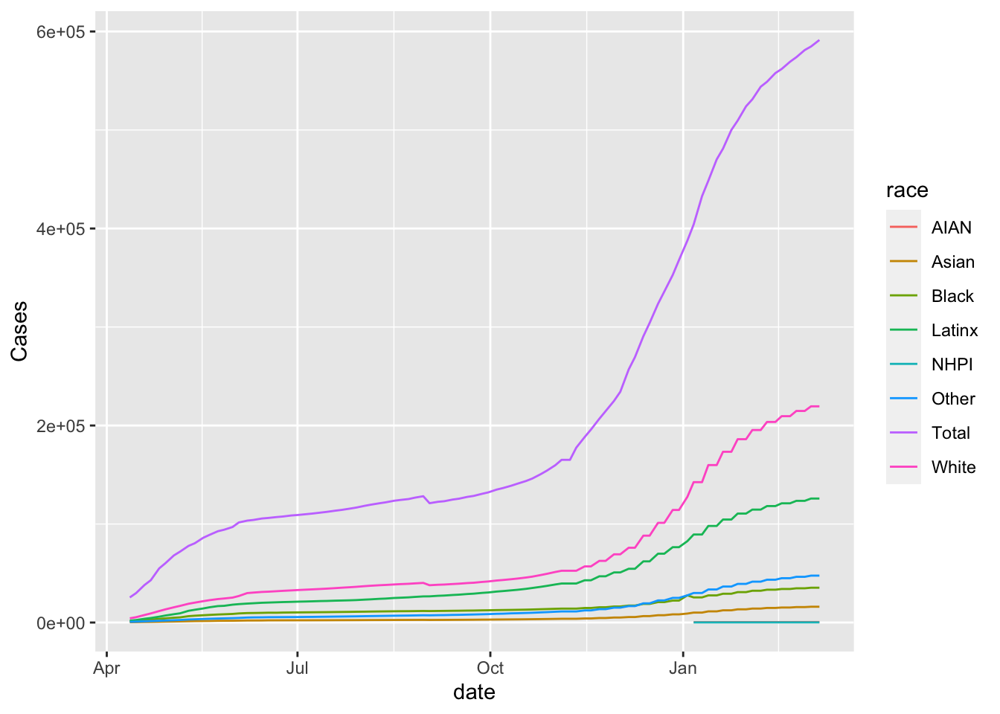

Today, we’ll be working with a data set related to COVID. This data is based on data from the the COVID Tracking Project. I cleaned up this data and also added total populations from the 2020 for each of the relevant categories. Note, due to differences in the way race and ethnicity are encoded in the census as compared to the the COVID Tracking Project, the population counts for LatinX may be somewhat inaccurate.
devtools::install_github("r-lib/conflicted")
Skipping install of 'conflicted' from a github remote, the SHA1 (92c361da) has not changed since last install.
Use `force = TRUE` to force installation
── Conflicts ────────────────────────────────────────── tidyverse_conflicts() ──
✖ dplyr::filter() masks stats::filter()
✖ dplyr::lag() masks stats::lag()
ℹ Use the conflicted package (<http://conflicted.r-lib.org/>) to force all conflicts to become errors
I’ve include 4 different data sets. They all have the same data but have it represented in different ways. Try using the different data sets and see which ones are good for making which plots.
ggplot(covid_data_count, aes(x = date, y = Cases)) +geom_point()
If you want to only look at a specific state, you can do it like this. For now, see what you can do just using ggplot.
covid_data_count |>filter(state =="MA") |>ggplot(aes(x = date, y = Cases, color = race)) +geom_line()

covid_data_long |>filter(state =="MA") |>ggplot(aes(x = date, y = count, color = race)) +geom_line()
covid_data_orig |>filter(State =="MA") |>ggplot(aes(x = Date, y = Cases_Total)) +geom_line()
covid_data_race |>filter(state =="MA") |>ggplot(aes(x = date, y = Total_count, color = count_type)) +geom_line()
Write code for a plot and describe what you observe? According to the first data set count, we can observe that the number of cases is on the rise, with the number of Latinx rising the fastest. Each region has the largest number of white people. In the second data set, the combined number of various types also shows an upward trend. Among them, the majority of races are white. The third data set leads to the same conclusion as the first data set. The fourth data set leads to the same conclusion as the second data set.
Are there any conclusions you can draw? Based on the plots drawn from the four data sets, I can draw the following conclusions. From April 2020 to March 2021, the number of cases is on the rise, and more and more people are getting COVID.
What were you not able to do due to not having the R knowledge? Without R, I would not be able to visualize the data and draw conclusions clearly and easily.
What other data would be useful to better understand this data? For example, cumulative recovery data, population health disparity data, and tourist number data in each state.